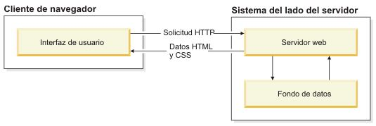
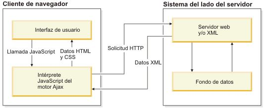
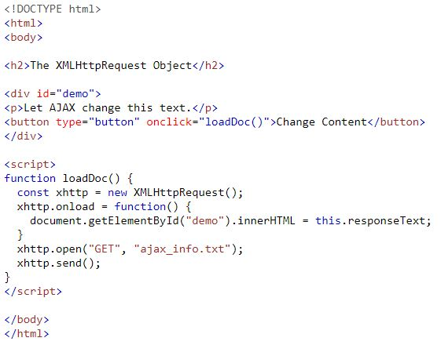

Ajax se compone de las siguientes tecnologías:
- XHTML y CSS para presentar información.
- DOM (Document Object Model - modelo de objetos de documento) para visualizar e interactuar de forma dinámica la información presentada.
- El objeto XMLHttpRequest para manipular los datos de forma asíncrona con el servidor web.
- XML, HTML y XSLT para el intercambio y la manipulación de datos.
- Se visualiza JavaScript para enlazar solicitudes e información de datos.
APRENDAMOS
APRENDAMOS
En una aplicación web tradicional, las solicitudes HTTP, que se inician mediante la interacción del usuario con la interfaz web, se realizan a un servidor web. El servidor web procesa la solicitud y devuelve una página HTML al cliente. Durante el transporte HTTP, el usuario no puede interactuar con la aplicación web.
En una aplicación web Ajax, no se interrumpe el usuario en interacciones con la aplicación web. El motor de Ajax o el intérprete JavaScript permite que el usuario interactúe con la aplicación web independientemente del transporte HTTP procedente del servidor o que tenga el servidor como destino representando la interfaz y gestionando las comunicaciones con el servidor en nombre del usuario.
Ejemplo
Enviar una solicitud
Para enviar una solicitud a un servidor, puede usar los métodos open() y send() del XMLHttpRequest objeto:
EJECUCIÓN